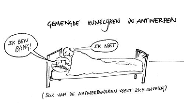

Woutel
zondag 22 februari 2004 | Zomaar
Ik heb alle nog rondslingerende cartoons ingescand van mijn oude klasgenoot Wouter Viane, die momenteel op doorreis is in Azië. Hij diende vorig jaar tijdens de Gentse Feesten zijn ontslag in en begon enkele maanden later aan de reis van zijn leven: een jaar weg van Westerse waarden. Zoiets kan alleen maar positieve gevolgen hebben…
Hoewel ik gewonnen ben voor het romantische beeld van de onafhankelijke avonturier in een oneindige wereld vol nieuwe en spannende verrassingen, ontbreekt het me aan moed (niet middelen) om zelf mijn boeltje (in) te pakken. Het moet in je bloed zitten.
Tijdens zijn omzwervingen bezoekt Wouter zo nu en dan een schaars internet-cafe om een berichtje na te laten op zijn speciale reis-blog. Zowaar eens een echt nuttige weblog! Nog veel plezier, kerel!
